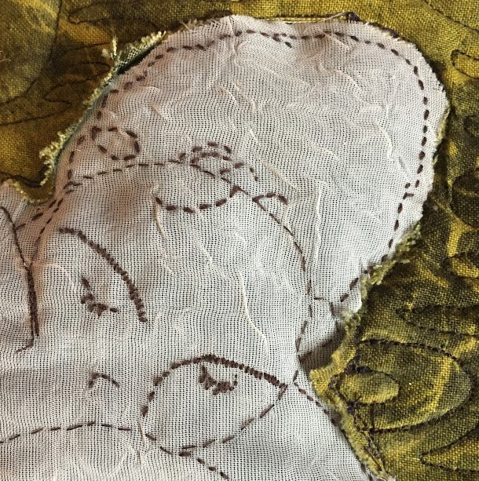

I crocheted this hat using the tapestry crochet method for my friend's birthday! I was my first time with that method and it was definitely a learning experience. I'd love to revisit it with a wall hanging next!
I made this quilt based off of Joanna Newsom's song Emily. I hand embroidered the girls bound in the vine and did the rest with my firend Nick's sewing machine. This is the first quilt I ever made!
Scarf knit with german short rows. This was my first time knitting with this method and I loved how dynamic it made the piece! Up next- intarsia!
This was the first thing I ever crocheted! A scarf to keep me warm in thos cold philly winters. With a pop of lime green to brighten up those bleak winter city blocks. I crocheted it all on trains back and forth to DC. I like tapestry crochet, but I think I've discovered, knitting is generally superior.